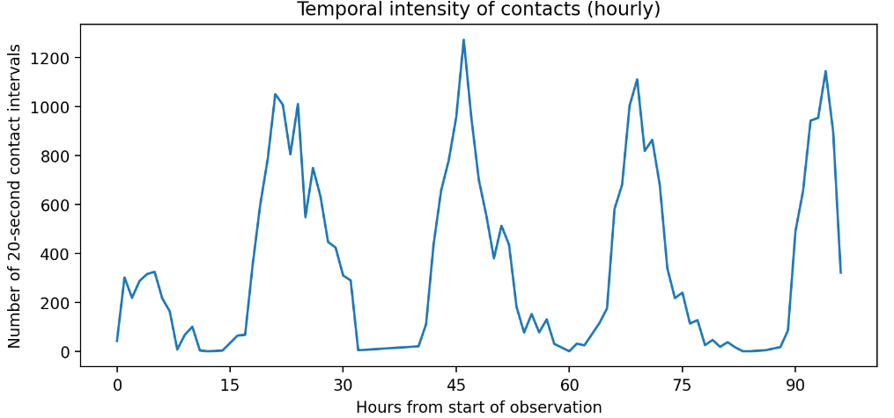

Why Goliath Struggles and David Does Not Lose : The Logic of the U.S.-Iran War
History is full of wars that resemble David versus Goliath: conflicts in which one side possesses overwhelming material superiority while the other is vastly weaker in conventional military terms. The intuitive expectation is straightforward — the stronger state should win. For much of modern history, that expectation held true. As Arreguín-Toft (2005) observes, strong actors historically won a clear majority of asymmetric conflicts. Yet, that broad pattern obscures a major modern shift: wars between the strong and the weak have become increasingly unpredictable, and the weak have become far more capable of avoiding outright defeat.
This essay argues that the key to understanding this shift lies not in raw military power, but in the complex relationship between war aims, time, and strategy. Strong states often enter asymmetric wars with immense destructive capacity, yet frequently struggle to translate battlefield superiority into durable political outcomes. Weak states, by contrast, may be unable to defeat the strong conventionally, but they can still successfully deny them victory. In this sense, modern asymmetric wars are not best understood as cases where David wins outright, but rather where Goliath fails to achieve his original political objectives. In the realm of asymmetric warfare, “not losing” is a profoundly meaningful strategic outcome.
Wars that are neither clear victories nor clear defeats
It is often more accurate to state that the weak do not lose, or that the strong fail to win, than to frame these conflicts in absolute terms of victory and defeat. This ambiguity stems directly from the nature of war aims. Sullivan (2007) argues that war outcomes are shaped by the interplay of two factors: Destructive capacity and Cost tolerance. Destructive capacity refers to the ability to coerce through military means — technology, training, doctrine, and firepower. Cost tolerance refers to a state’s willingness to absorb casualties, financial burdens, political backlash, and extended timelines. The crucial point is that destructive capacity is relatively visible before war begins, while cost tolerance is much harder to observe. States can count tanks, aircraft, and missiles more easily than they can predict how long an opponent will endure punishment.
This matters especially in wars whose success depends on enemy compliance. In many asymmetric conflicts, the strong state does not merely seek to destroy armed units. It seeks to compel a weaker actor to change behavior, surrender political control, stop supporting insurgents, accept occupation, or comply with a new political order. Those goals depend not only on physical destruction but also on the target’s willingness to yield. If the weaker side refuses to comply indefinitely, even while suffering tactical losses, then the cost of victory rises in ways that are difficult to estimate beforehand. Sullivan’s broader argument is precisely that as war aims depend more heavily on target compliance, uncertainty about the cost of victory grows, and relative resolve becomes more consequential.
Seen this way, strong states do not necessarily struggle in asymmetric war because they lack firepower or even because they lack resolve in some absolute sense. They struggle because they misjudge how costly compliance will be to extract. Once the political, economic, and human costs of achieving the original objective exceed what leaders and publics were willing to pay, the strong state often scales back, narrows its goals, or withdraws. The weaker side, meanwhile, does not need to destroy the stronger actor’s military. It often needs only to survive long enough for the stronger actor’s patience to erode. That is why so many asymmetric wars end not with triumphant conquest, but with exhausted stalemate, mission drift, or strategic retrenchment.
The Strategic Weapon: Time
Arreguín-Toft’s central insight is that strategic interaction dictates outcomes more than raw power. He categorizes strategies into two approaches: Direct (targeting the opponent’s capacity to fight) and Indirect (targeting the opponent’s will to fight by avoiding decisive battles and imposing continuous costs). When both sides use similar strategic approaches, the strong actor usually prevails. However, when the weak side adopts the opposite approach — refusing the battlefield terms preferred by the strong — its prospects improve dramatically. Historically, strong actors win roughly 76.8 percent of same-approach interactions, while weak actors win about 63.6 percent of opposite-approach interactions.
| Direct Defense | Indirect Defense | |
|---|---|---|
| Direct Offense | Strong favored | Weak favored |
| Indirect Offense | Weak favored | Strong favored |
This is not a mechanical law, but it captures an important tendency in asymmetric conflict: when the weak refuse the strong actor’s preferred mode of war, conflict becomes protracted, and time begins to work against the stronger state.
Time matters because the two sides typically value the war differently. Mack (1975)’s classic argument about “interest asymmetry” remains useful here. For the weak actor, the war is often existential. Survival, sovereignty, and political community are at stake. That tends to generate a stronger consensus around sacrifice. For the strong actor, by contrast, the war is often limited rather than existential. Other national priorities remain in play, and the conflict competes with domestic political concerns. In such cases, prolonged war increases political vulnerability: casualties mount, financial costs accumulate, legitimacy erodes, and publics begin asking what exactly is being gained in exchange for continued sacrifice.
This is why time is not just a background variable in asymmetric war; it is itself a strategic weapon. The weak side may lose territory, equipment, and population in the short run, yet still improve its long-run position by extending the war. The longer the conflict continues, the more likely it becomes that divisions emerge within the strong actor’s leadership, legislature, media system, and public. What begins as a military campaign gradually turns into a political test of endurance. In this sense, the weak transform time into leverage. They survive, absorb, delay, and wait for the stronger power’s coalition of support to fray.
External support and the extension of war
Record (2007) adds another major factor: foreign help. In his account of insurgent victories against major powers, external assistance emerges as one of the most consistent correlates of success for the weak. Foreign aid can provide money, sanctuary, weapons, intelligence, recruits, and diplomatic cover. More importantly, it lengthens the war. And because time often benefits the weak side politically, foreign support magnifies the structural problem faced by the strong. Record’s broader warning is that great powers, especially democracies fighting for non-core interests, are particularly vulnerable when insurgencies can outlast them politically and strategically.

A. The “Firebreak” Regime (Low Contagion)
In the Low scenario, the network topology works for us.
- Outcome: The takeoff probability is negligible across all roles (≤ 5%).
- Mechanism: The structural holes between patient rooms and the sparsity of the backbone act as natural firebreaks. Even when a Nurse (NUR) is the seed, the infection typically burns out before establishing a chain of transmission.
B. The “Saturation” Regime (High Contagion)
In the High scenario, the system undergoes a phase transition.
- Outcome: The clinical core (MED/NUR) transforms into a “super-highway.” If the infection starts in a Physician, there is a 92.5% probability of a sustained outbreak.
- Structural Equivalence: Notably, Physicians (92.5%) and Nurses (91.0%) are effectively equivalent super-spreaders. Both roles act as the “ignition switch” for the ward.
C. The Critical Transition
The most important finding is the fragility of the Admin/Patient periphery.
- - In the Low scenario, ADM/PAT seeds are negligible risks (< 1.0% takeoff).
- Structural Equivalence: Notably, Physicians (92.5%) and Nurses (91.0%) are effectively equivalent super-spreaders. Both roles act as the “ignition switch” for the ward.
Policy Implications: Adaptive Precision IPC
The contrast between the two scenarios supports a strategy of Adaptive Precision Infection Prevention and Control(IPC). Policies should switch gears based on the estimated transmissibility (R0) of the threat.
1. Baseline Mode (For Low-Contagion / Endemic Pathogens)
- Context: MRSA, seasonal flu (lower R0).
- Strategy: Standard Precautions & Symptomatic Testing.
- Rationale: The simulation shows that for lower `inf.prob`, the network’s natural topology effectively contains spread. Identifying and isolating symptomatic “seeds” is sufficient because the network resists “takeoff.”
2. Surge Mode (For High-Contagion / Pandemic Pathogens)
- Context: COVID-19 (Omicron), Measles, Novel Respiratory Viruses.
- Strategy: Structural Fragmentation (Cohorting).
- Rationale:
When ‘inf.prob’ is high, the natural network barriers fail. We must artificially induce the “Low Regime” by cutting edges in the network.
- Action: Implement “Pod Nursing” (Assigning specific nurses to specific rooms exclusively) to manually recreate the structural holes that the virus has learned to jump.
- Action: Ban “Floating” staff (who move between wards), as they provide the bridging ties that allow the high-contagion wildfire to spread between components.
3. Physician-Specific Interventions
- Insight: In the Low contagion scenario, Nurses presented a slightly higher risk of initiating an outbreak than Physicians. However, in the High contagion scenario, the dynamic shifts: Physicians become the primary “global” bridges, exhibiting the highest probability of connecting otherwise disjointed patient groups.
- Policy: Consequently, physician workflows should be modified to prioritize “virtual rounds” or “tele-consultations” during high-transmissibility surges. This intervention directly reduces the number of physical edges physicians create in the network graph, effectively severing the “super-highway” of transmission while maintaining clinical oversight.
References
Jenness et al. (2018). EpiModel: An R Package for Mathematical Modeling of Infectious Disease over Networks. Journal of Statistical Software, 84, 8.
Vanhems et al. (2013). Estimating Potential Infection Transmission Routes in Hospital Wards Using Wearable Proximity Sensors. PLOS ONE, 8(9), e73970.